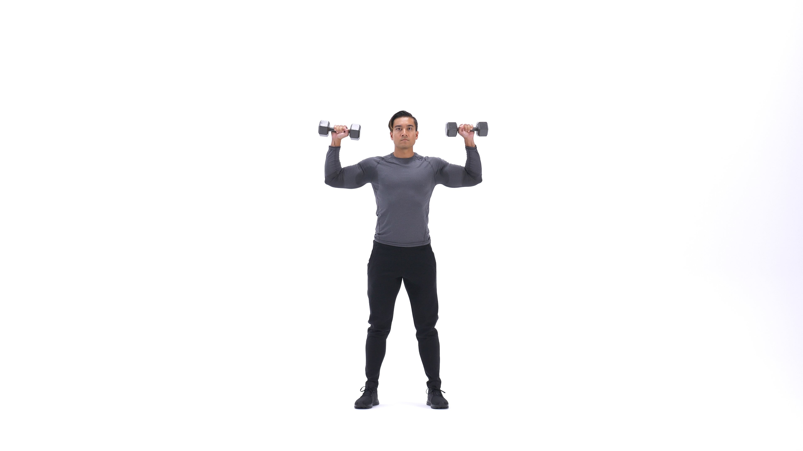
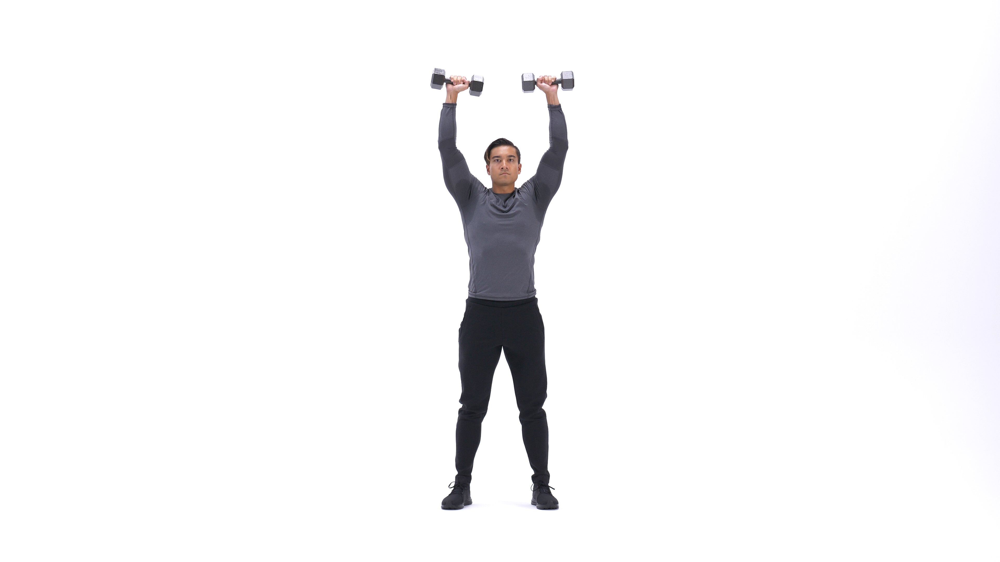

The standing dumbbell shoulder press is a classic deltoid-building exercise that is common in gyms around the world. Performing the move standing up as opposed to seated allows more weight to be used and taxes the core more than seated presses. The standing press is worthy of being the main movement in a muscle-building shoulder workout, but is also a great strength movement and accessory for the bench press.
1. Standing with your feet shoulder width apart, take a dumbbell in each hand. Raise the dumbbells to head height, the elbows out and about 90 degrees. This will be your starting position.
2. Maintaining strict technique with no leg drive or leaning back, extend through the elbow to raise the weights together directly above your head.
3. Pause, and slowly return the weight to the starting position.
1. Builds size and strength in the shoulders and triceps.
2. Many people find pressing with dumbbells to be more shoulder-friendly than with barbells.
3. Develops shoulder strength and stability that carries over to other lifts and sports
This is the Shoulder Press in the down position.
This is the Shoulder Press in the up position.
